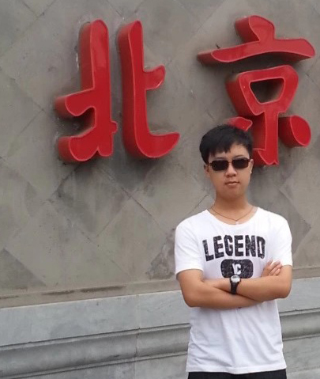

Hanwen Liu
A master student at Peking University
Contact: liuhnwgmail.com

I am a first-year master student in Computer Engineering at Peking University. Previously, I received my bachelor degree in Computer Science and Technology from Dalian University of Technology in 2020.My research mainly focuses on machine learning and its security issues, centering around how to make machine learning even stronger and more reliable. If you are happened to interested in the same things, please feel free to contact me.
Education

Peking University, China
M.S. Student in Computer Engineering
Sep.2020 — Present
Dalian University of Technology, China
B.E. in Computer Science and Technology
Sep.2016 — Jun.2020
Honours
Dalian University of Technology Distinguished Undergraduate {Student, Thesis Award}
Dalian University of Technology Learning Excellence Award ×3
Good luck and have fun